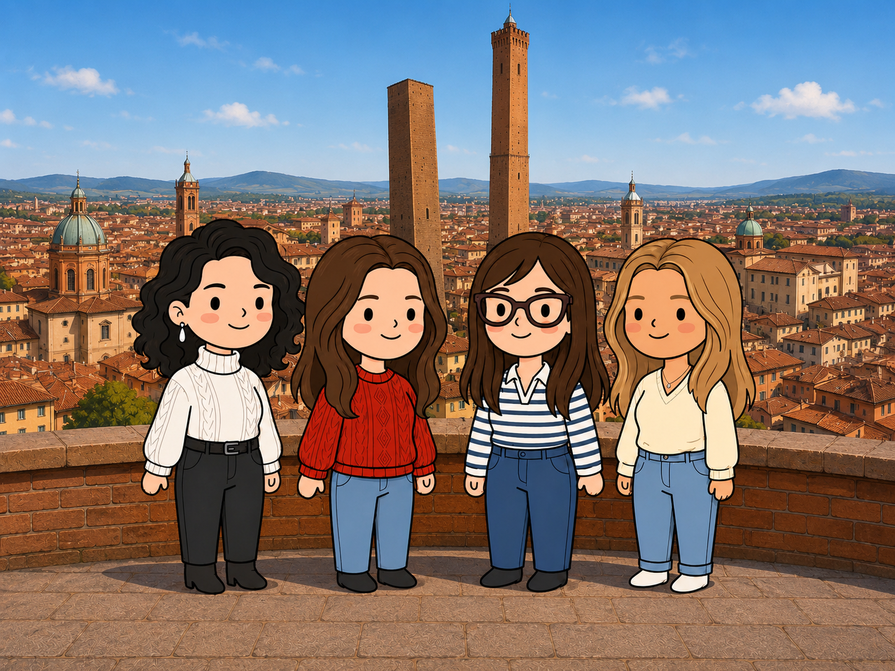

Project Abstract
The project aims to represent and semantically enrich the urban points of interest of the city of Bologna. Starting from heterogeneous datasets made available by the Open Data portal of the Municipality of Bologna, the work aims to build a knowledge graph that reuses the national ontology of Points of Interest (POI-AP_IT), developed by AGID, and, where necessary, extends it with specific concepts of the Bolognese urban context.
The work is divided into several phases: the exploration of the national ontology via SPARQL, the local ontological extension via Protégé, and the automatic generation of RDF triples by comparing the performance of the Large Language Models Gemini Pro and ChatGPT Plus. The entire process is driven by the desire to bridge a semantic gap between the national model and the specificities of the Bolognese context, while simultaneously ensuring the reuse of the existing vocabulary.
Team Members

- Michela Di Campli
- Alexia Dinescu
- Sofia Mazzetti
- Elena Paniccià